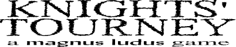

a strategy game for you and your computer


a strategy game for you and your computer
A chess board is set with two knights: one black, one white. Yours is the white knight and you take the first move. You alternate turns with the computer, but you lose if it's your turn and you can't move. Sounds easy, right?
The pieces move just like knights in ordinary chess, but the trick is that squares disappear from the board when pieces pass through them. Once you've been to a square, neither you nor the computer can go there again.
One strategy is to try and stay free so that you'll never be caught without a possible move. Another is to try and head off the computer knight so that it will be left without anywhere to go. The computer does a little of each and plays a decent game.
Once the game is loaded, you simply point and click on the board to move. After the game ends, click the red button to play again.
Knights' Tourney requires version 5 of Macromedia's Flash Player. If you don't have the plug-in, you can download it for free.
The Knight's Tour is a classic logic puzzle in the form of a chess problem: Is it possible for a chess knight to move through every square on the board without revisiting any? The answer for the usual 8x8 chess board is yes, but the general question for arbitrary board sizes has interested mathematicians working in the area of graph theory. See, for instance, Mark Keen's paper on the subject. There are several on-line implementations of the original problem.
Knights' Tourney is a two-player generalization of the Knight's Tour which has been suggested by enough people that it's hard to name one inventor. This implementation of it is ©2001 by P.D. Magnus.
The title font is Piracy by Jakob Fischer. He's designed a great number of fonts that are available for free at pizzadude.dk.